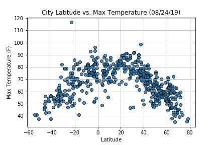
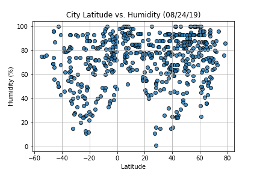
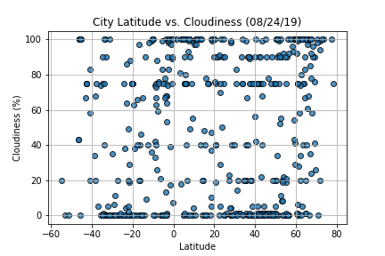
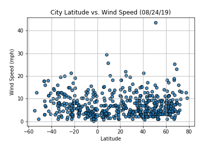

WeatherPy In this example, you'll be creating a Python script to visualize the weather of 500+ cities across the world of varying distance from the equator. To accomplish this, you'll be utilizing a simple Python library, the OpenWeatherMap API, and a little common sense to create a representative model of weather across world cities. Your objective is to build a series of scatter plots to showcase the following relationships: Temperature (F) vs. Latitude  Humidity (%) vs. Latitude  Cloudiness (%) vs. Latitude  Wind Speed (mph) vs. Latitude  Your final notebook must: Randomly select at least 500 unique (non-repeat) cities based on latitude and longitude. Perform a weather check on each of the cities using a series of successive API calls. Include a print log of each city as it's being processed with the city number and city name. Save both a CSV of all data retrieved and png images for each scatter plot. As final considerations: You must complete your analysis using a Jupyter notebook. You must use the Matplotlib or Pandas plotting libraries. You must include a written description of three observable trends based on the data. You must use proper labeling of your plots, including aspects like: Plot Titles (with date of analysis) and Axes Labels. See Example Solution for a reference on expected format.